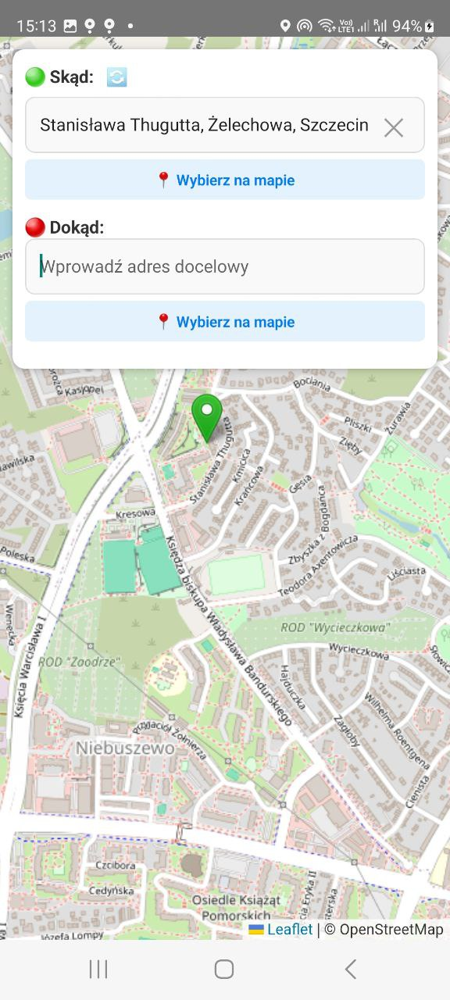

Whitepaper — Dezentrales Taxi- und Werbenetzwerk
Version: 1.0 — Oktober 2025
Inhalt
- Werbesystem in Taxis — Umgesetzt
- Dezentrale Taxi-App (Web3Taxi) — In Entwicklung
- Offline-Netzwerk — Meshtastic (LoRa) — Geplant
- Internes Zahlungssystem — Geplant
- Fazit & Haftungsausschluss
1. Werbebildschirme in Taxis
Status: Implementiert ✅
Wir haben ein Netzwerk digitaler Werbebildschirme in Taxiflotten implementiert. Die Geräte erfüllen mehrere zentrale Aufgaben:
- Werbeplattform — Anzeige gezielter Werbung und Inhalte basierend auf Standort, Tageszeit und Profil des Fahrgasts.
- Technologische Basis — Tablets fungieren als vollwertige Rechenknoten (Android ARM) und sind für eine zukünftige Integration in ein dezentrales Netzwerk vorbereitet.
- Lokale Gesichtserkennung — ein auf dem Tablet vollständig laufendes neuronales Netzwerk erkennt die Aufmerksamkeit der Fahrgäste und zählt Werbeeinblendungen. Es werden keine personenbezogenen Daten übertragen, wodurch DSGVO/RODO eingehalten wird.
- Datenschutz — alle Verarbeitung erfolgt lokal; nur anonymisierte Statistiken (Werbeeinblendungen, Engagement-Metriken) werden an den Server gesendet.
Dieses System ermöglicht sowohl die Monetarisierung von Werbung als auch die Vorbereitung eines skalierbaren Web3Taxi-Ökosystems, bei vollständiger Wahrung der Privatsphäre der Nutzer.
2. Dezentrale Taxi-App (Web3Taxi)
Status: In Entwicklung ⚙️
Ein Peer-to-Peer-System, bei dem Fahrten direkt auf Geräten verarbeitet werden – auf Tablets, Telefonen oder Mini-Servern.
- libp2p + WebRTC — P2P-Kommunikation
- Redis / Gossip — Zustands-Synchronisation
- DID — Dezentralisierte Identifikation
- Python / Go / React Native — Implementierung auf verschiedenen Geräten

3. Offline-Netzwerk — Wi-Fi HaLow (802.11ah)
Status: Geplant 🔄
Was ist Wi-Fi HaLow?
Wi-Fi HaLow (IEEE 802.11ah) ist ein energieeffizienter WLAN-Standard mit großer Reichweite, der im Sub-1-GHz-Frequenzbereich arbeitet.
Im Gegensatz zu herkömmlichem WLAN bei 2,4 GHz oder 5 GHz bietet HaLow eine deutlich größere Abdeckung — bis zu 1 km pro Knoten in städtischer Umgebung — und kann Wände und Hindernisse dank der niedrigeren Frequenz wesentlich besser durchdringen.
Wichtige Vorteile
- Hohe Datenrate — von mehreren hundert kbit/s bis zu einigen Mbit/s, was die Übertragung größerer Datenpakete wie JSON-Nachrichten, Telemetrie, Bilder oder Steuersignale ermöglicht.
- WLAN-basierte Architektur — unterstützt standardmäßige IP-Kommunikation und erlaubt eine nahtlose Verbindung mit Tablets, Smartphones und IoT-Geräten.
- Sehr gute Wanddurchdringung — Signale im Sub-1-GHz-Bereich dringen wesentlich besser durch Gebäude als herkömmliches WLAN.
- Niedriger Energieverbrauch — optimiert für IoT- und Mesh-Netzwerke, in denen Geräte über lange Zeiträume mit Batteriebetrieb arbeiten.
- Offline-Mesh-Fähigkeit — Geräte können direkt miteinander kommunizieren, ohne Internet oder Mobilfunknetz, und so ein autarkes lokales Netzwerk bilden.
Wi-Fi HaLow vereint somit das Beste aus zwei Welten: die Zuverlässigkeit und IP-Kompatibilität von WLAN mit der Reichweite und Effizienz von LoRa-ähnlichen Netzwerken — ideal für stadtweite Offline-Kommunikationssysteme.
4. Internes Zahlungssystem
Status: Geplant 🔄
Ein tokenisiertes System für Zahlungen zwischen Fahrern, Passagieren und Werbepartnern, auf Basis von Polygon oder Base Blockchain.
Fazit & Haftungsausschluss
Dieses Projekt verbindet Werbung, Transport und Rechenleistung in einem dezentralisierten Netzwerk. Alle Zahlen sind Richtwerte und keine Anlageempfehlung.